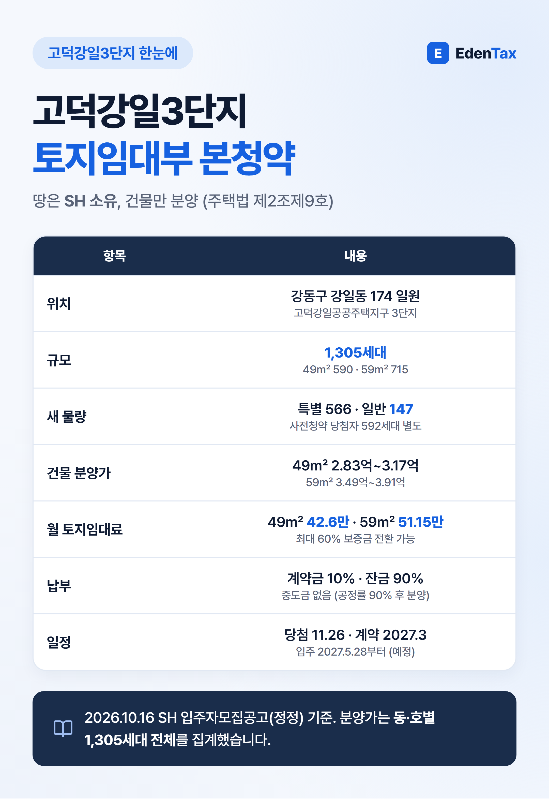
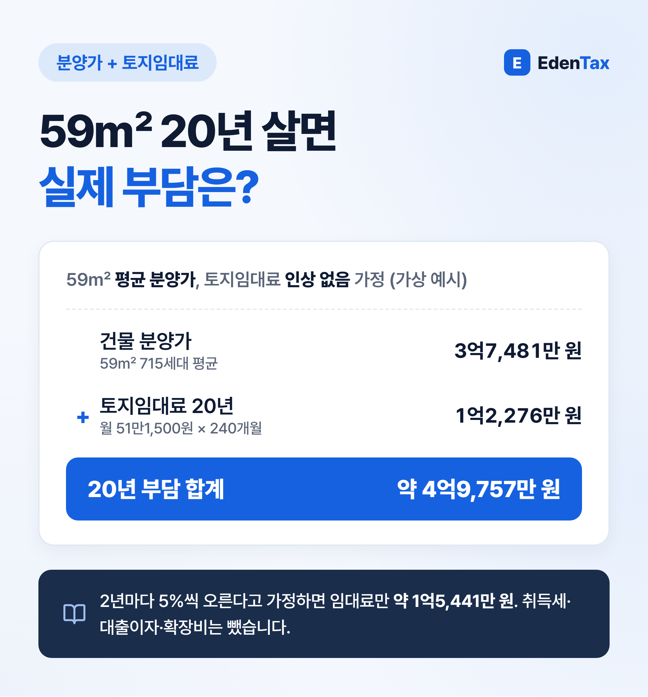
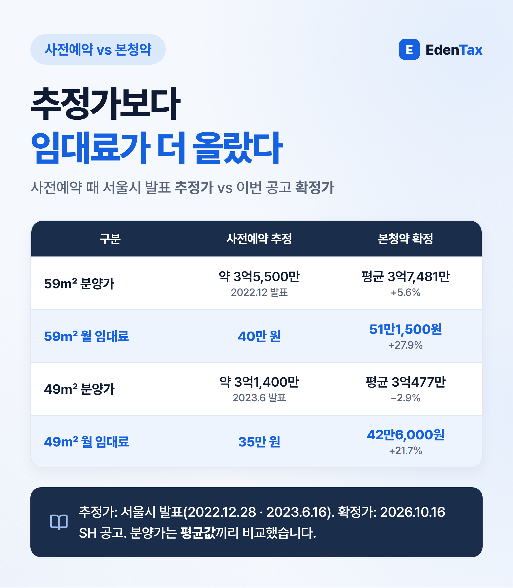
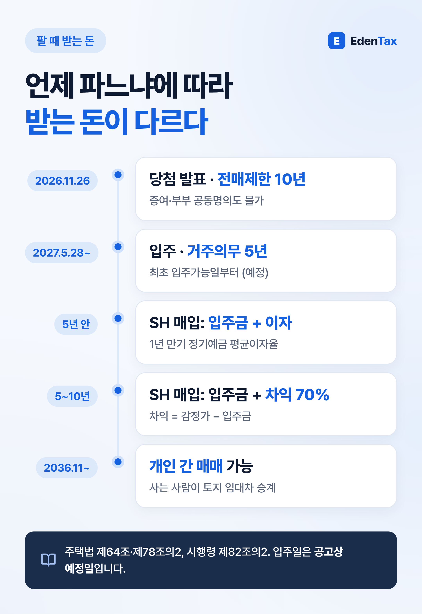
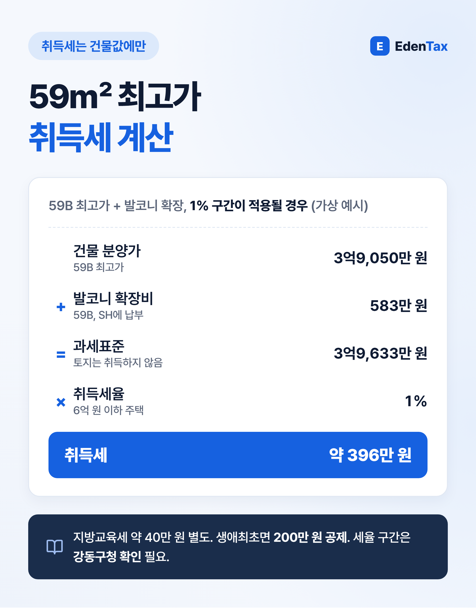

강동구 고덕강일3단지가 토지임대부 분양주택 본청약을 받습니다. 건물만 분양받고 땅은 SH가 계속 가지는 방식이라 분양가가 3억 원대이지만, 매달 토지임대료를 내고 10년 동안은 SH에만 팔 수 있습니다. 이 칼럼은 SH 입주자모집공고(2026.10.16 정정공고)를 기준으로 청약 자격, 실제 부담, 되팔 때 규칙, 세금을 차례로 정리했습니다. (2026년 10월 25일 기준)

일정과 자격부터
| 항목 | 내용 |
|---|---|
| 물량 | 1,305세대 중 사전청약 당첨자 592세대 제외, 특별공급 566 · 일반공급 147세대 |
| 접수 | 특별공급 11.2~3, 일반 1순위 서울 2년 이상 거주자 11.4 · 그 외 11.5, 2순위 11.6 (SH 인터넷청약) |
| 발표 · 계약 | 당첨자 발표 11.26, 계약 2027.3.22~4.2 |
| 공통 자격 | 수도권 거주 무주택세대구성원, 총자산 3억 6,200만 원 이하 |
| 소득 (3인 이하 월평균) | 우선공급 753만 원(맞벌이 1,055만 원), 추첨 753만 원(맞벌이 1,507만 원) |
일반공급은 신생아 우선 50%, 1순위 우선 30%(3년 이상 무주택·저축총액 순), 나머지 추첨 순으로 뽑습니다. 같은 순위에서는 서울 2년 이상 거주자에게 50%를 먼저 배정합니다. 접수는 청약홈이 아니라 SH 인터넷청약시스템입니다.
실제 부담: 분양가 + 20년 토지임대료

| 구분 | 49㎡ | 59㎡ |
|---|---|---|
| 건물 분양가 | 2억 8,336만~3억 1,724만 원 | 3억 4,880만~3억 9,050만 원 |
| 월 토지임대료 | 42만 6,000원 | 51만 1,500원 |
| 20년 임대료 (인상 없음) | 1억 224만 원 | 1억 2,276만 원 |
임대료는 처음 2년간 동결되고, 그 뒤에도 한 번에 5%를 넘겨 올릴 수 없습니다. 2년마다 5%씩 오른다고 가정하면 59㎡의 20년 합계는 약 1억 5,441만 원입니다. 2022·2023년 사전예약 때 추정치와 비교하면 분양가보다 임대료가 더 많이 올랐습니다(59㎡ 40만 원 → 51만 1,500원, 27.9%).

임대료의 최대 60%는 보증금으로 바꿀 수 있습니다. 공고 예시 전환이율 2.5%면, 그보다 비싼 대출로 보증금을 마련할 경우 계산상 전환하지 않는 쪽이 낫습니다.
되팔 때 규칙: 10년간 상대는 SH
전매제한은 당첨자 발표일부터 10년, 거주의무는 최초 입주가능일부터 5년입니다. 증여와 부부 공동명의도 전매로 보아 허용하지 않습니다.

| 파는 시점 | 받는 돈 |
|---|---|
| 거주 5년 전 | 입주금 + 1년 정기예금 이자 |
| 5~10년 | 입주금 + (감정가 − 입주금) × 70% |
| 10년 후 | 개인 간 매매 (사는 사람이 토지 임대차 승계) |
예를 들어 입주금 3억 8,000만 원, 감정가 5억 원이라고 가정하면 6년째 SH 매입가는 4억 6,400만 원입니다. 토지 임대차기간은 40년이고 소유자 75% 이상이 청구하면 갱신됩니다(주택법 제78조).
세금: 건물값에만 취득세, 그래도 주택 수에는 포함

- 취득세: 땅을 사지 않으므로 건물 분양가와 확장비가 과세표준입니다. 59B 최고가 3억 9,050만 원에 확장비 583만 원이면 1% 구간 기준 약 396만 원입니다(지방교육세 별도). 생애최초 주택이면 200만 원 공제가 있습니다.
- 세율 구간은 확인 필요: 지방세법은 주택 일부만 취득하면 전체 주택 가액으로 환산해 세율 구간을 정합니다. 토지임대부에 이 환산을 어떻게 적용하는지 직접 다룬 해석은 찾지 못했으므로, 계약 전 강동구청 세무과에 확인해 두는 것이 안전합니다.
- 양도세: SH 매입도 양도입니다. 강동구는 조정대상지역이라 취득 때 지정이 유지되면 비과세에 보유·거주 각 2년이 필요한데, 거주의무 5년을 채우면 함께 충족됩니다.
- 주택 수: 땅이 없어도 세법상 주택이라(소득세법 제88조) 다른 집을 사거나 상속받을 때 주택 수에 들어갑니다.
세무사 한마디
토지임대부는 10년 동안 증여도, 부부 공동명의도 할 수 없습니다. 나중에 배우자에게 지분을 넘겨 세금을 나누려던 계획이 있다면 그 전제부터 다시 세우셔야 합니다. 취득세 세율 구간도 계약 전에 꼭 확인해 두시길 권합니다.
— 정재욱 세무사
에덴택스는 국세청 출신 세무사가 양도·상속·증여·취득까지 부동산 세금을 전문으로 상담합니다. 당첨 주택형·동호 가격과 세대원 전원의 주택 보유 이력을 가져오시면 취득세·명의·주택 수 문제를 함께 정리해 드립니다.
※ 2026년 10월 25일 현재 SH 입주자모집공고(2026.10.16 정정공고)와 법령 기준의 일반 안내입니다. 임대료 인상과 매입가 예시는 가정이며, 특정 단지의 청약이나 매수·매도를 권하지 않습니다.